À propos de ce guide
Les captures d'écran de ce document ont été réalisées sur un environnement de démonstration
contenant des données fictives (Marie Dupont, Jean Martin, Sophie Durand). Aucune donnée réelle
d'agent n'y figure.
1. Introduction & rôles
Le portail RH permet de gérer, en un seul endroit, l'ensemble des absences des agents de la mairie :
congés annuels, récupération d'heures supplémentaires, Compte Épargne Temps (CET) et congés de
parentalité. Chaque demande suit un circuit de validation et met à jour automatiquement les soldes.
Les différents rôles
Rôle
Ce qu'il peut faire
Agent (Employé, Alternant…)
Poser ses congés, déclarer/utiliser des heures de récupération, consulter ses soldes et le calendrier de l'équipe.
Responsable (niveau de validation > 0)
Tout ce que fait un agent, plus la validation des demandes de son équipe (dans la file de validation).
Administrateur — RH · Direction · DG
Accès complet : gestion des comptes, validation de toutes les demandes, ajustement des soldes, statistiques, jours fériés…
Qui est « administrateur » ?
Toute personne dont le type de compte est RH, Direction ou DG.
Ces comptes voient le menu « Interface RH » ; les agents ordinaires ne le voient pas.
Le circuit de validation d'une demande
L'agent dépose sa demande depuis son tableau de bord.
Son responsable direct (N1) puis, le cas échéant, le responsable hiérarchique (N2) valident.
La RH donne la validation finale — ou peut valider directement pour court-circuiter le circuit.
Une fois validée, la demande décompte automatiquement le solde de l'agent.
2. Se connecter au portail
La connexion se fait en deux temps : on choisit son nom dans la liste des agents, puis on saisit son mot de passe.
Adresse du portail
Scannez ce QR code avec l'appareil photo de votre smartphone, ou saisissez l'adresse
directement dans votre navigateur (ordinateur, tablette ou mobile).
https://rh-reservation-u9jb.vercel.app/
Installer le portail comme une application
Le portail est une application web installable : depuis votre mobile, après avoir scanné le QR code,
utilisez « Ajouter à l'écran d'accueil » pour y accéder ensuite en un seul geste.
Ouvrez le portail dans votre navigateur.
Recherchez votre nom via le champ de recherche, puis cliquez sur votre fiche.
Saisissez votre mot de passe et cliquez sur « Se connecter ».
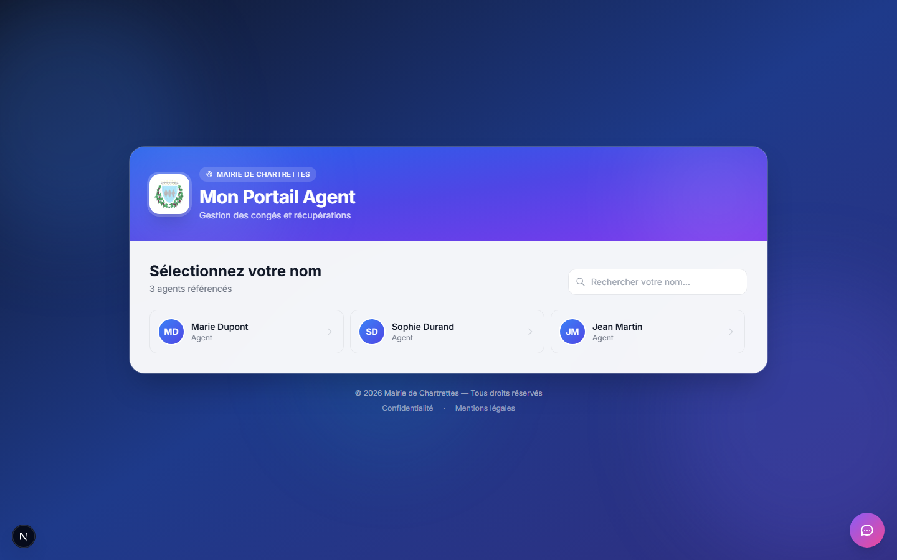
Étape 1 — sélection de l'agent dans la liste.
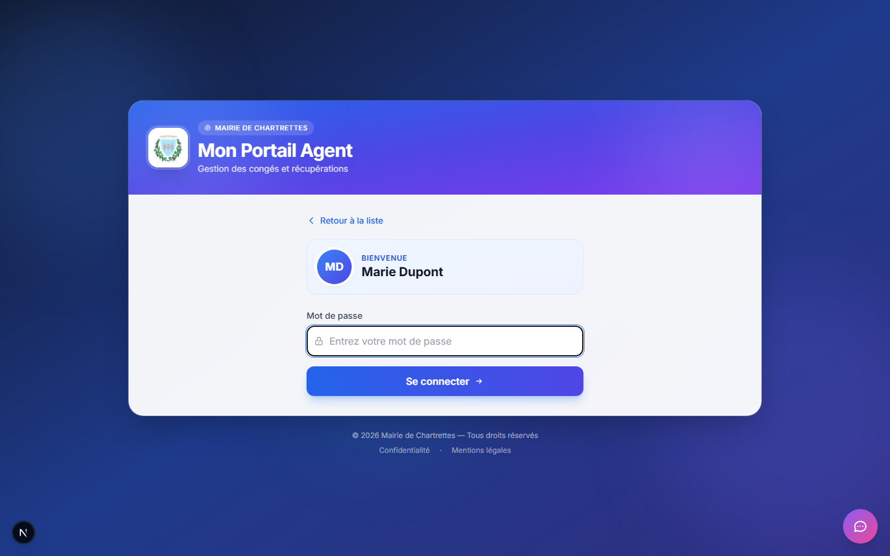
Étape 2 — saisie du mot de passe.
Première connexion / mot de passe temporaire
À la création d'un compte, un mot de passe temporaire est généré. À la première connexion, l'agent est
invité à le remplacer par un mot de passe personnel. En cas d'oubli, la RH peut réinitialiser le mot de
passe (voir chapitre 5).
3. Vue d'ensemble de l'interface
Une fois connecté en tant qu'administrateur, vous arrivez sur votre tableau de bord personnel.
La barre de navigation en haut donne accès à toutes les sections.
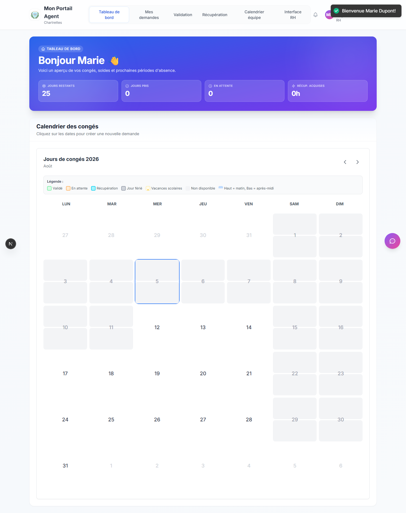
Tableau de bord — soldes personnels et calendrier de pose des congés.
La barre de navigation
Menu
Contenu
Tableau de bord
Vos soldes et votre calendrier personnel de congés.
Mes demandes
L'historique et le suivi de vos propres demandes.
Validation
La file des demandes à valider (responsables & RH).
Récupération
Déclaration et utilisation des heures supplémentaires.
Calendrier équipe
Vue d'ensemble des absences de tous les agents.
Interface RH
Le centre d'administration (réservé RH/Direction/DG).
4. Interface RH — Toutes les demandes
L'Interface RH est organisée en onglets. Le premier, « Toutes les demandes », présente
l'ensemble des demandes de congés de la collectivité avec leur circuit de validation et leur statut.
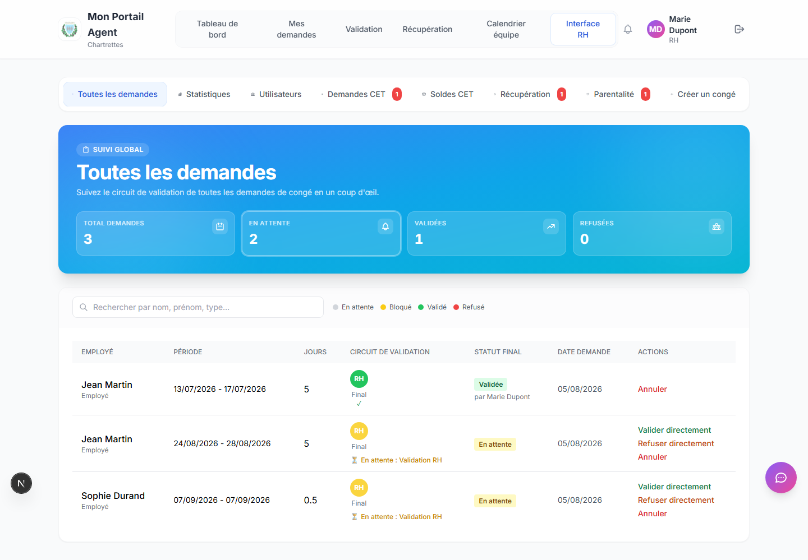
Onglet « Toutes les demandes » — suivi global.
Actions possibles sur une demande
Valider directement : approuve la demande immédiatement, sans attendre le circuit N1/N2.
Refuser directement : rejette la demande (un motif peut être précisé).
Annuler : annule une demande déjà validée (par exemple en cas d'erreur), avec motif.
Astuce Le champ de recherche permet de filtrer par nom, prénom ou type d'agent.
Les pastilles de couleur indiquent le statut : orange = en attente, vert = validé, rouge = refusé.
Recalcul des soldes Après un ajustement manuel ou une correction, un bouton permet de
recalculer l'ensemble des soldes à partir des congés réellement validés. Les soldes sont toujours
recalculés à partir des demandes validées, jamais incrémentés à la main.
5. Gérer les utilisateurs (agents)
L'onglet « Utilisateurs » centralise la gestion des comptes : création, modification,
réinitialisation de mot de passe, ajustement des soldes et suppression.
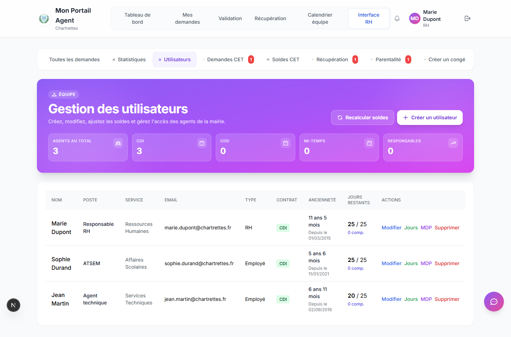
Onglet « Utilisateurs » — liste des agents et statistiques.
Créer un nouvel agent
Cliquez sur « Créer un utilisateur » pour ouvrir le formulaire.
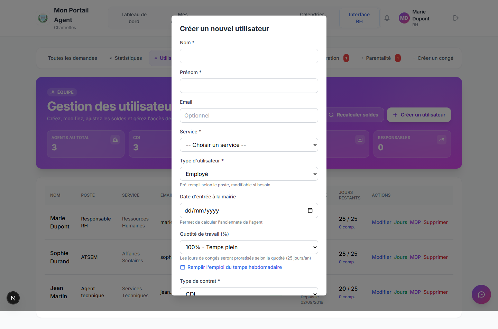
Formulaire de création d'un agent.
Identité : nom, prénom, e-mail, type d'agent, service et poste.
Contrat : CDI, CDD (avec dates) ou Mi-temps ; date d'entrée à la mairie (pour l'ancienneté).
Quotité de travail : de 50 à 100 %.
Horaires hebdomadaires (optionnel) : horaires matin/après-midi pour chaque jour de la semaine.
Horaires hebdomadaires & jours non travaillés
Si vous renseignez les horaires d'un agent à temps partiel, les demi-journées qu'il ne travaille pas
apparaîtront grisées dans son calendrier — il ne pourra pas y poser de congé (voir chapitre 13).
Un mot de passe temporaire est généré automatiquement à la création : communiquez-le à l'agent.
Autres actions sur un agent
Action
Effet
Modifier
Met à jour l'identité, le contrat, la quotité et les horaires.
Réinitialiser le mot de passe
Génère un nouveau mot de passe temporaire à transmettre à l'agent.
Ajuster le solde
Ajoute ou retire des jours (congés ou jours compensateurs), avec un motif obligatoire.
Supprimer
Supprime définitivement le compte et ses demandes. Action irréversible.
Suppression d'un agent La suppression efface aussi toutes ses demandes de congés.
Préférez la modification si l'agent quitte temporairement ses fonctions.
6. Créer un congé pour un agent
L'onglet « Créer un congé » permet à la RH de poser directement un congé pour n'importe quel
agent — utile pour régulariser une absence ou saisir un congé à la place de l'agent.
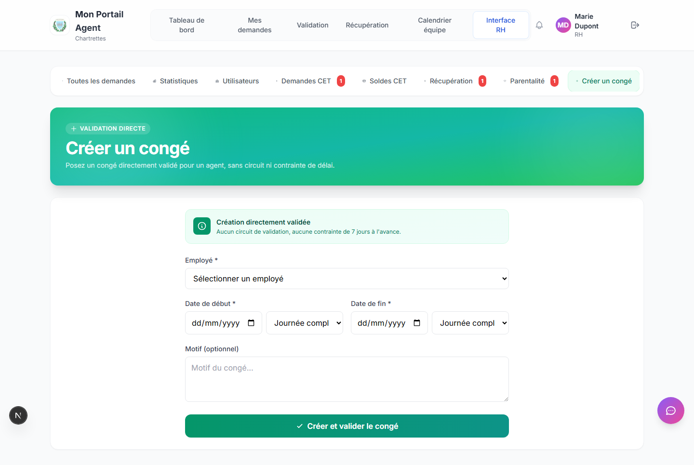
Création directe d'un congé par la RH.
Sélectionnez l'agent (son solde s'affiche).
Choisissez la date de début et de fin, avec le type (journée complète, matin, après-midi).
Ajoutez éventuellement un motif, puis validez.
Particularité Un congé créé par la RH est validé immédiatement et n'est pas soumis
au délai de prévenance de 7 jours ni au circuit N1/N2.
7. Récupération & heures supplémentaires
L'onglet « Récupération » regroupe les déclarations d'heures supplémentaires et leur utilisation.
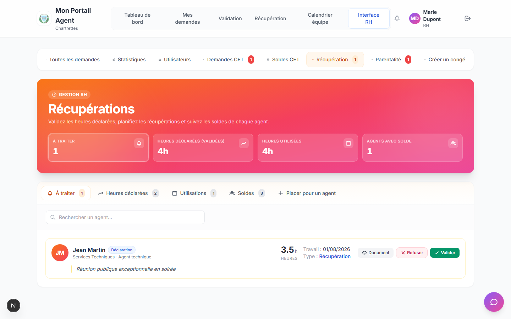
Onglet « Récupération » — déclarations et utilisations.
Le principe
L'agent déclare des heures supplémentaires effectuées, en choisissant la compensation :
rémunération (être payé) ou récupération (temps de repos).
La RH valide la déclaration ; les heures « récupération » alimentent le solde d'heures de l'agent.
L'agent utilise ensuite ces heures pour poser une récupération (matin/après-midi).
Vos actions
Valider ou refuser une déclaration d'heures supplémentaires.
Valider ou refuser une utilisation de récupération.
Poser une récupération directement pour un agent (sans passer par sa demande).
Affichage dans le calendrier Les récupérations posées apparaissent en cyan dans le
calendrier de l'agent, sur le matin ou l'après-midi selon l'horaire (voir chapitre 13).
8. Compte Épargne Temps (CET)
Le CET permet à un agent d'épargner des jours de congés non pris. Deux onglets le concernent.
Demandes CET
Les agents demandent un versement (déposer des jours) ou un retrait (récupérer des jours).
La RH valide ou refuse chaque demande.
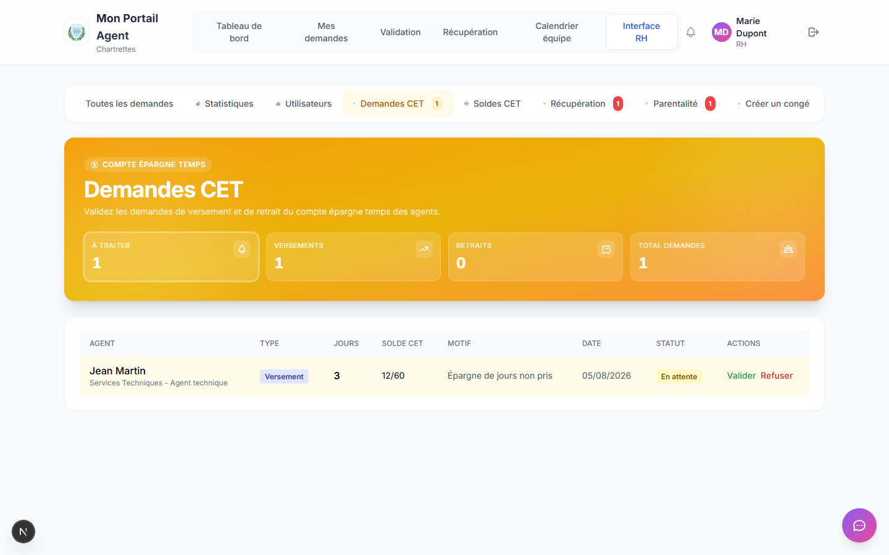
Onglet « Demandes CET ».
Soldes CET
Vue d'ensemble des soldes CET de tous les agents, avec versements et retraits de l'année. Le bouton
« Ajuster » permet de corriger un solde (avec motif).
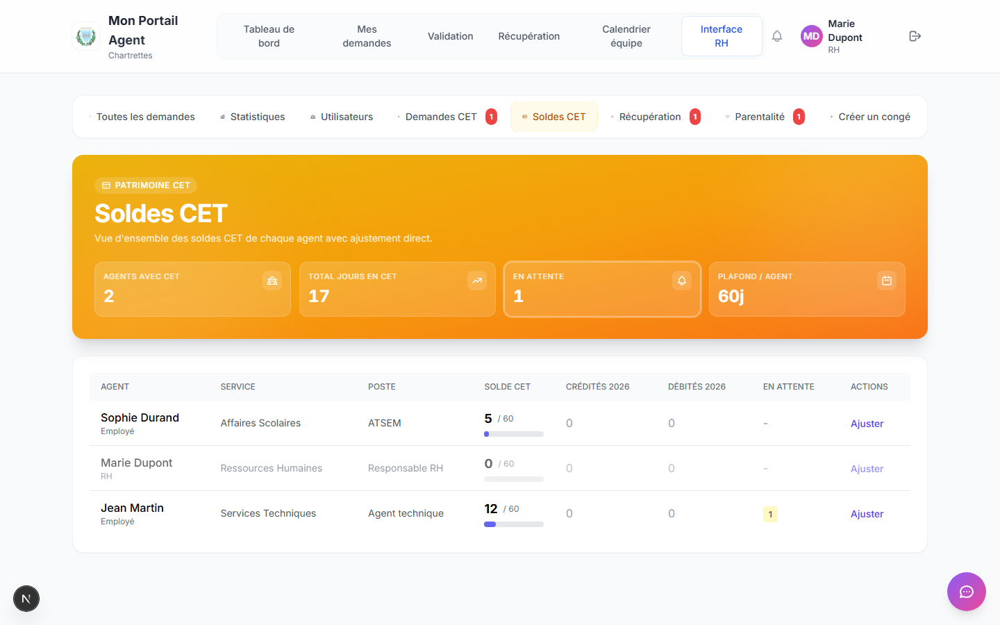
Onglet « Soldes CET ».
Règles du CET Plafond de 60 jours par agent. L'ouverture d'un CET requiert
1 an d'ancienneté ; le transfert annuel est limité (jusqu'à 5 jours/an selon les règles en vigueur).
9. Congés de parentalité
L'onglet « Parentalité » traite les congés de maternité, paternité et adoption.
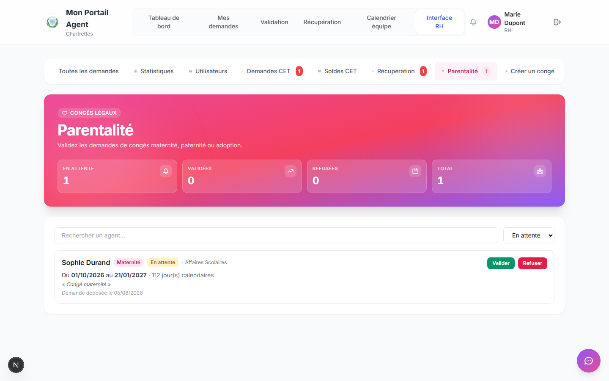
Onglet « Parentalité ».
Consultez les demandes déposées par les agents avec le justificatif éventuel.
Validez ou refusez la demande (un commentaire peut être ajouté).
10. File de validation
La page « Validation » rassemble toutes les demandes en attente de votre décision (congés,
récupérations, parentalité). C'est le point d'entrée quotidien pour traiter les demandes.
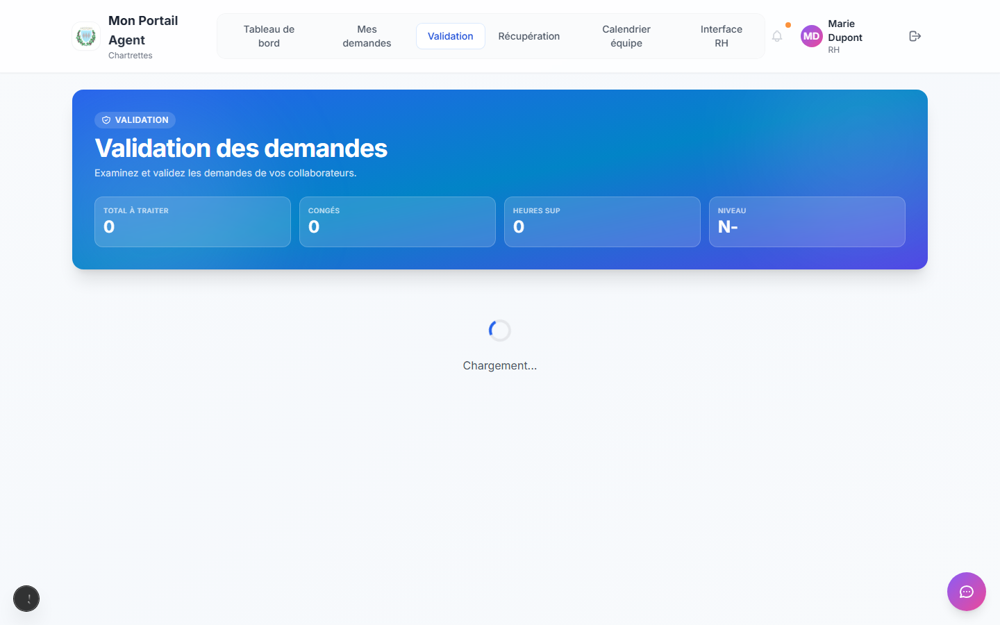
File de validation.
Examinez chaque demande (agent, période, motif, solde restant).
Ajoutez un commentaire si nécessaire, puis validez ou refusez.
Notifications Les agents et responsables concernés sont prévenus automatiquement
(notification push) à chaque étape du circuit.
11. Statistiques
L'onglet « Statistiques » offre une vue analytique : tendances, soldes et activité des absences
sur l'ensemble du personnel.
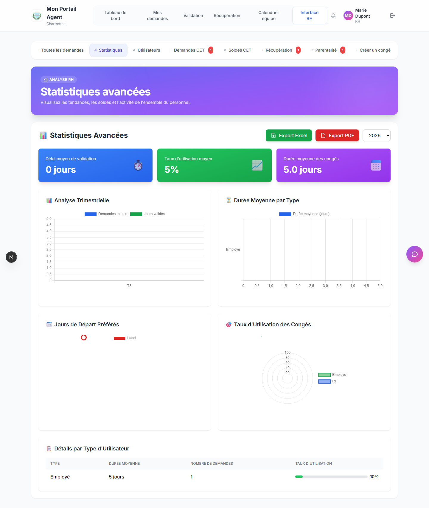
Onglet « Statistiques ».
Utilisez ces indicateurs pour anticiper les pics d'absence et suivre la consommation des congés.
12. Calendrier de l'équipe
Le calendrier de l'équipe affiche, mois par mois, les absences de tous les agents. Chaque journée
est découpée en matin / après-midi pour visualiser les demi-journées.
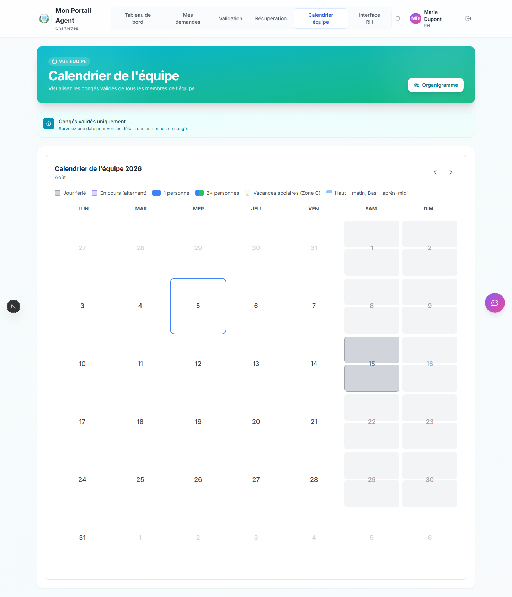
Calendrier de l'équipe.
Lecture Un coup d'œil suffit pour repérer les périodes de forte absence et éviter les
chevauchements au sein d'un même service.
13. Ce que voit un agent
Comprendre l'écran de l'agent vous aide à l'accompagner. Depuis son tableau de bord, l'agent pose ses
congés en cliquant sur les demi-journées du calendrier.
Légende des couleurs du calendrier
Validé En attente Récupération Jour férié Non disponible / non travaillé
Agent à temps partiel — jours non travaillés grisés
Lorsqu'un agent a des horaires hebdomadaires renseignés, les demi-journées qu'il ne travaille pas
sont automatiquement grisées et non sélectionnables. Ci-dessous, Sophie ne travaille pas le mercredi
(ni le vendredi après-midi) : ces créneaux apparaissent en gris.
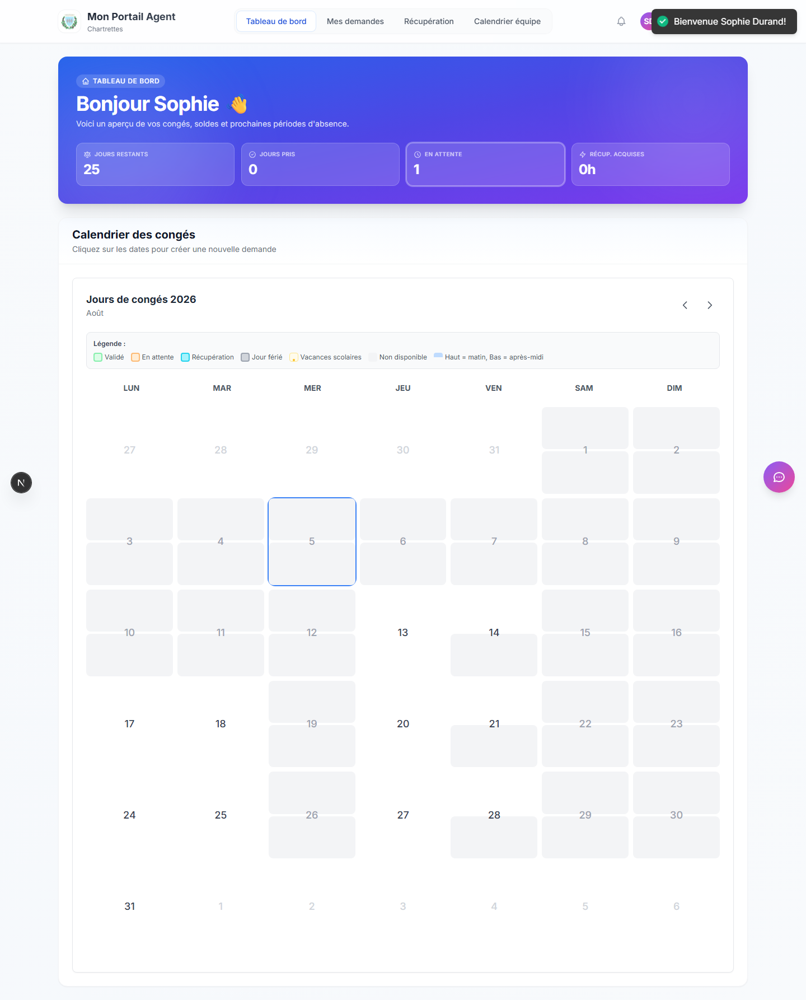
Tableau de bord d'une agente à temps partiel — mercredis grisés.
Récupérations affichées en cyan
Les récupérations posées apparaissent en cyan, sur le matin ou l'après-midi selon l'horaire.
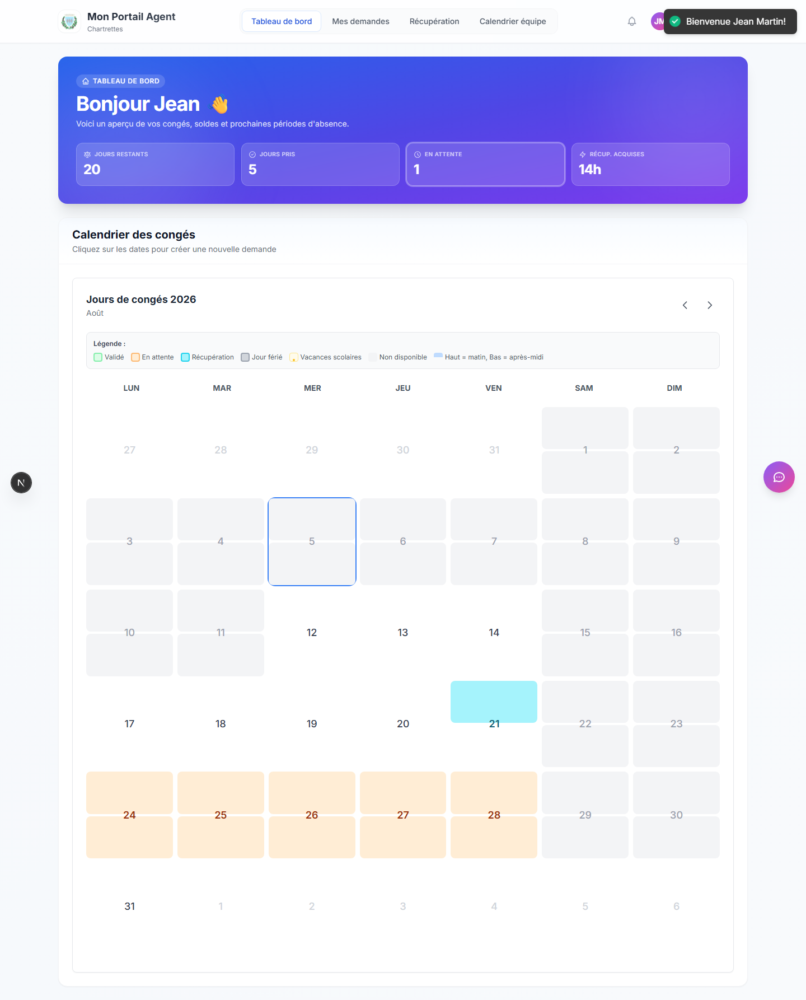
Calendrier d'un agent avec une récupération (en cyan).
Mes demandes & Récupération (côté agent)
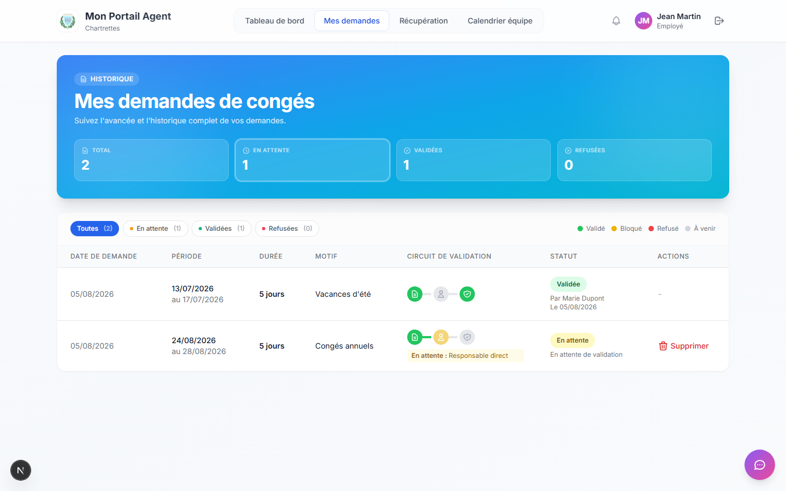
Suivi de ses demandes.
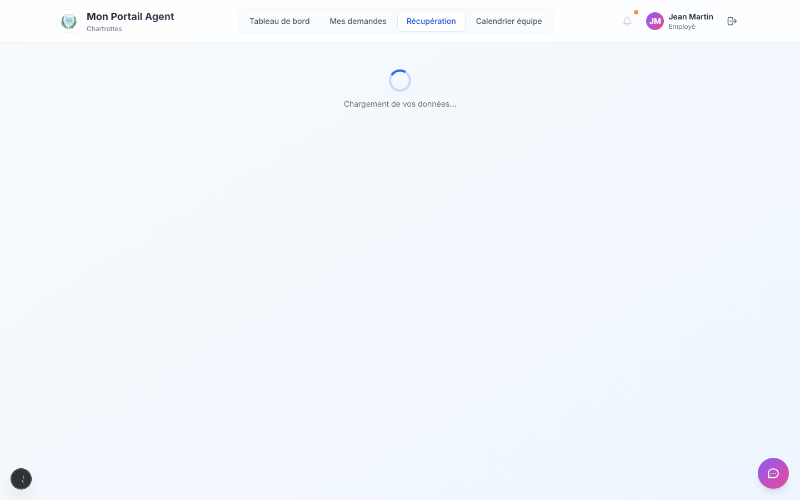
Espace récupération de l'agent (solde, déclarations, utilisations).
14. Questions fréquentes & dépannage
Un agent a oublié son mot de passe
Interface RH → Utilisateurs → Réinitialiser le mot de passe. Communiquez le nouveau mot de passe
temporaire à l'agent ; il le changera à sa prochaine connexion.
Le solde d'un agent semble incorrect
Vérifiez ses demandes validées, puis utilisez le bouton de recalcul des soldes. Les soldes sont
toujours recalculés depuis les congés réellement validés.
Un agent ne peut pas poser de congé sur un jour
Le jour est peut-être un week-end, un jour férié, un jour non travaillé (temps partiel), une récupération
déjà validée, ou situé à moins de 7 jours (délai de prévenance). Ces créneaux sont grisés.
Une demande a été validée par erreur
Dans « Toutes les demandes », utilisez Annuler sur la demande concernée (avec motif). Le solde est
automatiquement recrédité.
Je ne vois pas le menu « Interface RH »
Ce menu n'apparaît que pour les comptes de type RH, Direction ou DG. Vérifiez le type du compte.
15. Annexes
15.1 Bonnes pratiques de sécurité & RGPD
Le portail contient des données personnelles d'agents : ne partagez pas de captures d'écran
contenant de vraies données hors du cadre autorisé.
Utilisez des mots de passe forts et invitez les agents à changer leur mot de passe temporaire.
Déconnectez-vous après usage sur un poste partagé.
Limitez le nombre de comptes RH/Direction au strict nécessaire.
15.2 Règles métier de référence
Élément
Règle
Délai de prévenance
Un congé se pose au minimum 7 jours à l'avance (sauf pose directe par la RH).
Demi-journées
Chaque journée se découpe en matin / après-midi.
CET
Plafond 60 jours ; 1 an d'ancienneté pour ouvrir ; transfert annuel limité.
Récupération
Heures supplémentaires converties en temps de repos, posables par demi-journée.
Soldes
Toujours recalculés à partir des demandes validées.
15.3 Statuts d'une demande
En attente Validée Refusée Annulée
Besoin d'aide ? Ce guide couvre les principales opérations. Pour toute question technique ou
évolution du portail, rapprochez-vous de votre prestataire / référent informatique.